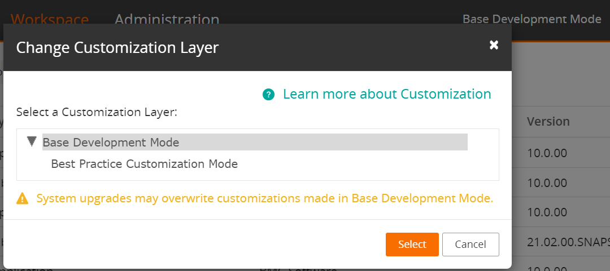

Customization layer
BMC Helix Innovation Studio provides the required flexibility to customize out-of-the-box applications by using customization layer and custom objects.
A customization layer is a copy of the BMC Helix Innovation Studio structure or workflow object that is used in place of the origin object, such as the out-of-the-box applications or definitions provided in BMC Helix Innovation Studio.
BMC Helix Innovation Studio provides two modes for the customization layer:
(Default) Best Practice Customization Mode
Base Development Mode
Best Practice Customization Mode
Best Practice Customization Mode (the default mode) provides the flexibility required to customize out-of-the-box BMC Helix Innovation Studio applications and objects or create new custom objects, such as applications, record definitions, view definitions, processes and so on, by using overlays and custom objects. With overlays, you can customize out-of-the-box BMC Helix Innovation Studio objects. Overlays ensure that the customizations are not lost when BMC Helix Innovation Studio application is upgraded. Overlays and custom objects protect any new functionality in your BMC Helix Innovation Studio application.
An overlay is a copy of a BMC Helix Innovation Studio structure or objects that is used in place of the origin object. Custom objects are new objects, such as records, views, UI components, that you can create in the Best Practice Customization Mode.
Best practice
We recommend that you create or modify objects in Best Practice Customization Mode. If you create or modify objects in Base Development mode, the changes might be lost when your BMC Helix Innovation Studio applications and servers are upgraded.
Base Development Mode
The Base Development Mode provides unrestricted access to create, modify, and delete origin objects, such as out-of-the-box applications, records, view, process, rules, and workflows. This mode is intended to be used only by application developers.
Best practice
We recommend that you do not modify or delete objects in Base Development Mode. If you do, your changes might be lost when your BMC Helix Innovation Studio applications and servers are upgraded.
To change the customization layer
Log in to BMC Helix Innovation Studio and navigate to the Workspace tab
On the navigation bar, select the current customization mode displayed in BMC Helix Innovation Studio.
By default, BMC Helix Innovation Studio opens in Best Practice Customization Mode.From the Change Customization Layer dialog box, select Base Development Mode.
Click Select.